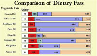

Contribution to
Sask. Agriculture
History of Canola
Canola Oil
Canola Markets
Canola Processing
 The development of canola is a story of scientific ingenuity and dedication. Scientists at Agriculture Canada, the National
Research Council, the University of Saskatchewan and the University of Manitoba shared information and research. They all worked toward a common goal--making canola a commercially viable crop.
The development of canola is a story of scientific ingenuity and dedication. Scientists at Agriculture Canada, the National
Research Council, the University of Saskatchewan and the University of Manitoba shared information and research. They all worked toward a common goal--making canola a commercially viable crop. |
|
Canola's Contribution to Saskatchewan's Agriculture Improvements in canola happened gradually over the past five decades. Historically, canola was developed from rapeseed. Rapeseed was grown for its oil, which was used for lubricants and not for human consumption. Rapeseed had limited value as a commercial crop. In the 1940s, Canadian farmers planted only 6000 acres of rapeseed per year. In the 1990s, farmers are planting about 10.5 million acres of canola annually. Nearly 5.5 million of that is grown in Saskatchewan.
Canola is Saskatchewan's second most important crop, after wheat.
Bright yellow fields of blossoming canola are a familiar sight in summer. Canola was developed from rapeseed through plant breeding and research. Canola oil has a complement of fatty acids that make it one of the healthiest edible oils. In contrast, rapeseed oil was not suitable for human consumption. Canola meal is a nutritious livestock feed, whereas rapeseed meal contained glucosinolates that inhibited livestock growth.
The knowledge and ingenuity of science has transformed rapeseed into canola. Such miracles have come about only after years of hard work, research, and countless field tests of new canola varieties.
The History of Canola Farmers of the 1940s discovered that rapeseed grew well on the Prairies, and was well-suited to the climate of the parkland region.
In 1957, Dr. Burt Craig and Martin Mallard developed methods for using gas chromatography as a rapid way of determining the fatty acid composition of rapeseed. Fatty acids are the building blocks of oils and fats. Canola is considered to be a "healthy oil", having oils with relatively low amounts of saturated fatty acids which have been linked to high blood cholesterol levels and heart disease. Canola oil also has high amounts of the healthy fatty acid oleic acid.
Dr. Keith Downey, a scientist at the Agriculture Canada Research Station in Saskatoon, directed research that resulted in new and better varieties of canola. Particularly important was the elimination of glucosinolate compounds and lowering the amount of erucic acid. These compounds are undesirable in human and animal feed as they can affect health and growth. Erucic acid, in particular, has been linked to cardiovascular disease.
Canola is an "open market" or "non-Board" commodity. The canola grower "sells direct" to the canola buyer. Price is set by supply and demand. About 40 percent of the canola traded each year, is used domestically, with the remainder being exported. Canola is therefore not subject to the "wheat price wars" that have occurred as countries try to bolster their share of world exports by subsidising production. Canadian farmers have always suffered in such cases. For those commodities marketed by the Canadian Wheat Board, farmers receive a pooled price. This means that the payment is based of the average price the Wheat Board receives for all the sales of a particular grain which it sells during the course of a year.
Within the open market system, producers receive the price of canola on the day the crop is sold. Producers must be aware of the many factors that cause the crop prices to fluctuate and time their deliveries and sales appropriately.
Here we see the farmer delivering seed to the country elevator who acts as an agent for another buyer such as a crushing plant. The producer may also wish to sell his seed directly to the crushing plant. There are nine oilseed crushing plants which crush canola, seven in western Canada and two in eastern Canada.
Six of the plants crush canola exclusively. Other sales can be made directly to export companies or grain agents. Since canola is a commodity it is traded on the Futures Market. Some producers decide to use the futures market to "lock-in" a price and then actually deliver against a futures contract to one of the acceptable delivery points

Unloading canola at a Japanese port, Japan is Canada's number one export market for canola and canola oil. Almost 1,700,000 million tonnes of canola seed are shipped to Japan every year. The second largest importer is the European Union with almost 400 million tonnes annually, followed by Mexico with 278 million tonnes. In comparison to the seed, very little processed canola is exported.
 Canola Oil Canola is one of the healthiest edible oils available to consumers. It contains only 6% saturated fats, which may contribute to heart disease.
Canola oil contains mono saturated fat (62%) and polyunsaturated
fat (32%). These fats are essential sources of energy, and may
actually lower the risk of heart disease.

Canola Processing Oilseed processing is a complex process which results in four groups of canola products--canola meal, crude degummed oil, canola oil products packaged for consumer and bulk canola oil. The oilseed industry makes a large contribution to the Canadian economy. Canola oil accounts for 63% of the total edible vegetable oils produced in Canada, compare to 24% for soybean oil and 4% for sunflower oil. Canola oil is quite literally "wrung" out of the seed. After initial crushing, a crude oil remains. When that is cleaned and refined, the oil can be stored safely for months or years. Canola seed yields about 40% oil and 60% meal. Margarine is packaged for sale in convenient sizes. Canola oil is low in cholesterol and an excellent choice for increasingly health-conscious consumers. Canola seed is transported to crushing plants in Ontario, Quebec, Alberta and Saskatchewan, where it is processed. Canola oil is shipped, in bulk, from there to domestic and foreign markets, or packaged at the plant for distribution to consumers. A typical processing plant has a daily crushing capacity of 6.5 thousand tonnes. The crushing plant at Nipawin, Saskatchewan, has an annual capacity of 104,000 tonnes. Japan is Canada's main export market for canola seed. Other importers of smaller quantities are the United States, Western Europe, Belgium and Korea. Canada is a net exporter of vegetable oils, with the U.S.A. importing more than 80% of our production. About two-thirds of the canola meal produced goes to the U.S.A. Japan and Norway are also major importers of meal. Canola is fifth in the world trade in agricultural crops, after rice, wheat, maize and cotton. Canola is Canada's third most important grain export, after wheat and barley. |